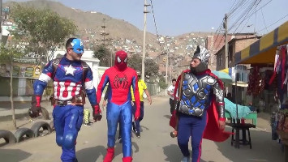

En Halloween todo es posible. Incluso que una banda de narcotráfico local sea desarticulada por los mismísimos Vengadores de Marvel. Es lo que ha sucedido en el distrito de San Juan de Lurigancho de Lima, la capital de Perú.

Un policía de Perú protagonizó este fin de semana una redada antidrogas de una forma singular: disfrazado como “El Grinch”, el personaje de los libros infantiles del Dr. Seuss que se ha vuelto icónico en Navidad.
Un integrante de la Policía Nacional de Perú se disfrazó este miércoles de oso de peluche para participar en un operativo contra la venta de droga en Lima en el marco de los festejos de San Valentín, informó la institución en su cuenta en la red social X.